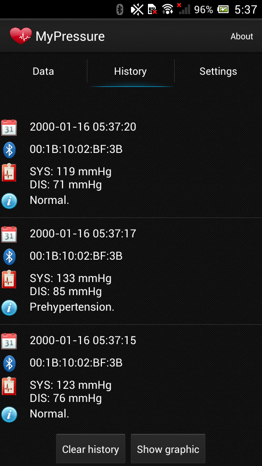
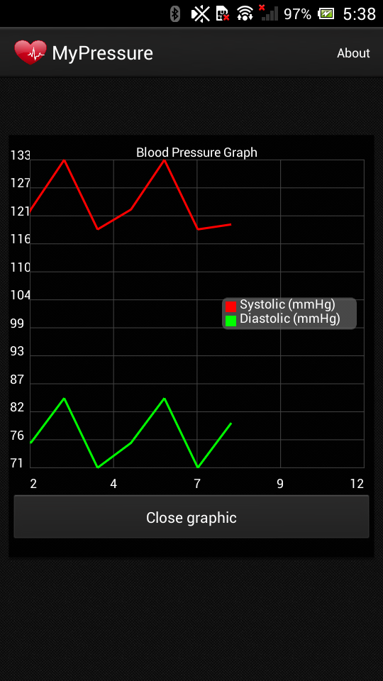
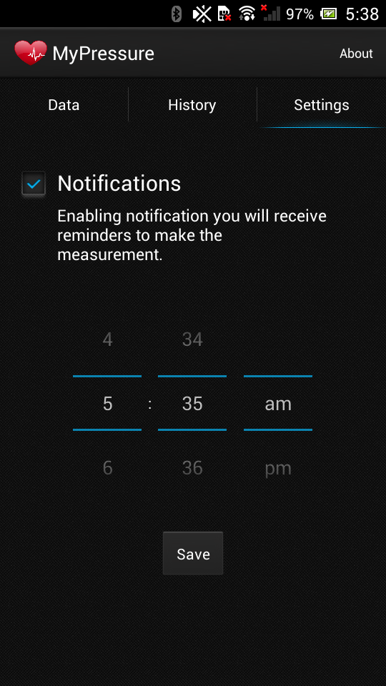
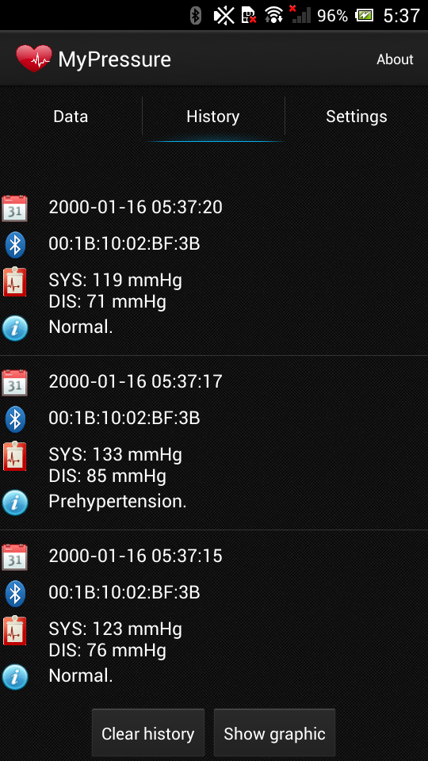
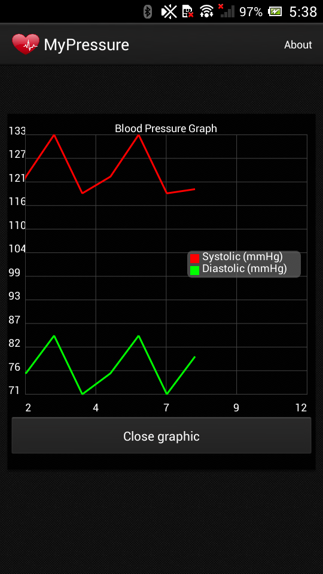
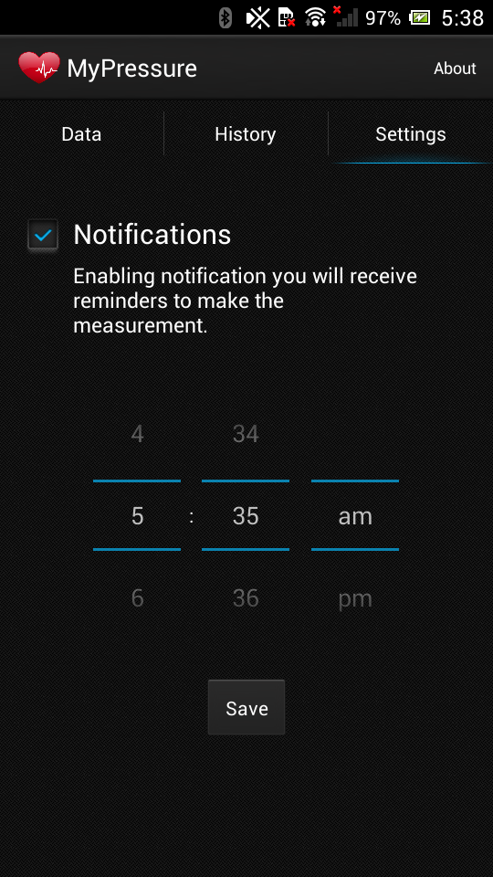

Descrição
O HealthServiceAndroid utiliza o serviço de bluetooth para acessar os dados de pressão arterial obtidos a partir dos aparelhos de medição arterial. Caso o usuário não disponha de um aparelho com conexão bluetooth ele poderá inserir os dados manualmente no aplicativo.
O aplicativo utiliza o padrão IEEE 11073 de conexão bluetooth. A conexão entre o aplicativo e o aparelho faz uso do Serviço desenvolvido pela empresa Signove (link para o projeto).
O usuário poderá visualizar os dados por meio de gráficos e acompanhar seu histórico de medição de pressão arterial. O aplicativo poderá notificar o usuário lembrando-o de aferir a pressão. Os dados das medições serão classificados de acordo com os padrões estabelecidos pela Sociedade Brasileira de Cardiologia (disponível aqui), informando ao usuário sobre possíveis disfunções na pressão arterial.
 





Autores
Anne Moreria - lattes
Theocrito Moura - lattes
Tiago Brasileiro - lattes
Suporte ou Contato
Anne Moreira - annelorayne@gmail.com
Theocrito Moura - theomouram@gmail.com
Tiago Brasileiro - brasileiroaraujo@gmail.com